Images
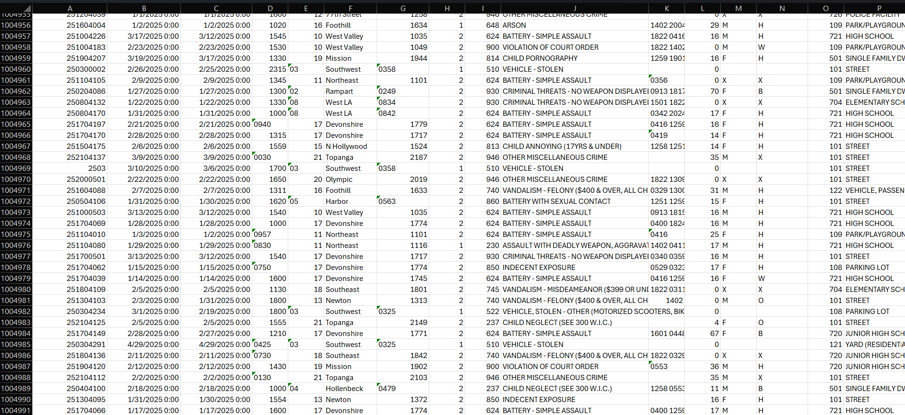
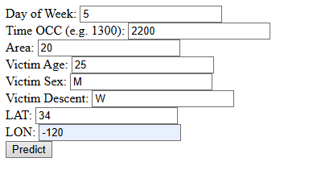

Here's what I've worked on:
Basic Crime Analytic ML Model
Software Engineering
Machine Learning, Flask Development, Python, HTML, Excel
Utilized publicly available criminal data, released by the City of Los Angeles, to build a machine learning model capable of predicting the type of crime being committed based on diverse factors such as time, day, age, sex, location, and more. This data includes every single crime committed from 2020 to 2025.
With over 1 million entries, it would be physically impossible to compile and compare the relationships between this data by hand, which is why I utilized joblib, pandas, and numpy libraries to build a simple model.
To explore and model relationships between perp data and their respective crime
committed. Allowed me to explore machine-learning possibilities in a way I found
interesting.
Note: I relied heavily on tutorials and online notes to complete this project. It was simply a way for me to dip my feet into the world of ML Modelling and gain a basic understanding of how these programs are structured.


Derelict Pit Bike Restoration
Mechanical Engineering
Welding, Machining, Cutting, CAD Design, Sprocket Ratio Calculation, Max Velocity Calculation, Project Planning
Worked closely with a skilled senior practical engineer on the restoration of a derelict pitbike which was found
abandoned in a field, left to rot. Planned and ran calculations beforehand. Sanded, cut, and utilized metalworking skills
to prepare the chasis to have the engine mounted.
Once the engine had been mounted, calculated the ideal sprocket ratio to reach the desired theoretical maximum speed. Ran a
chain from the engine's shaft to the back wheel, machined and developed a chain tensioner to ensure the belt did not slip
off our sprockets.
To develop and practice practical engineering skills such as welding and general metalworking.
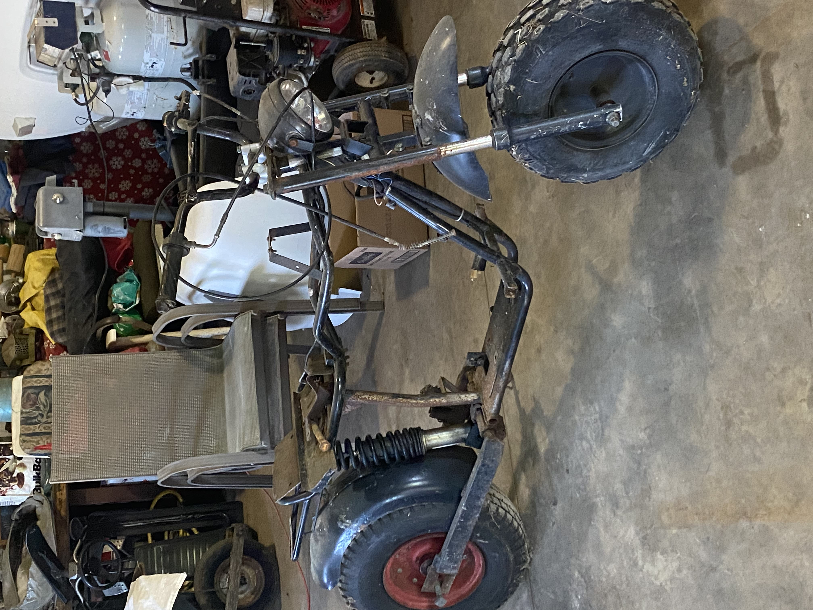


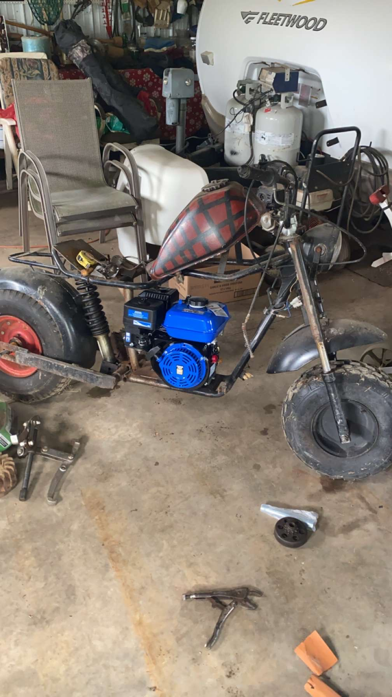
Custom Server Build
Computer & Software Engineering
Computer Building, Operating System Implementation, Firmware and Software Implementation, Soldering, Software Development, Backend Development, HTML Development
Utilized both scrap and new computer parts, to put together a custom server to host numerous sites and applications. Hosts
my own personal HTML applications, as well as multiple client webpages. Used software like NGROK to host without having to
go through my own IPV4 address.
Created custom .BAT files to handle starting up server applications automatically. Created
a custom HTML site with backend code to allow for further ease in booting of server side software, rather than having to
constantly use terminal commands anytime I want to boot software.
To allow for the hosting of my own projects without the need of external assistance.
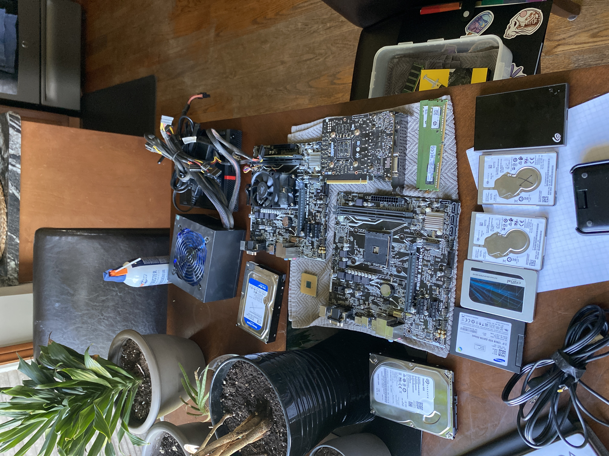
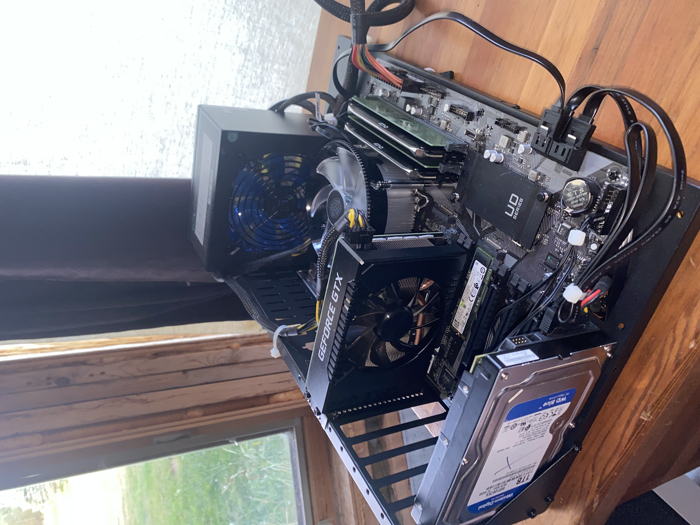
ENGG*2100 - Reverse Engineering
Mechanical Engineering
Solidworks, Team Communications, Problem Solving, Measurement Acquirement.
Accurately measured and modeled a mechanical assembly, using Solidworks, based on a physical product. The product was a 12-in-1 STEM toy, which included various mechanical components such as gears, linkages, a motor, a solar panel, and other various mechanical parts. The goal was to reverse engineer the product by taking precise measurements of each component and then creating a detailed 3D model of the entire assembly using Solidworks.
This project required a high attention to detail and precise measurement, as well as proficiency in using Solidworks to create accurate parts. The final product was a comprehensive Solidworks assembly and animation that accurately represented the original product, demonstrating the ability to reverse engineer mechanical systems.
To develop Solidworks skills and gain experience in reverse engineering mechanical systems.
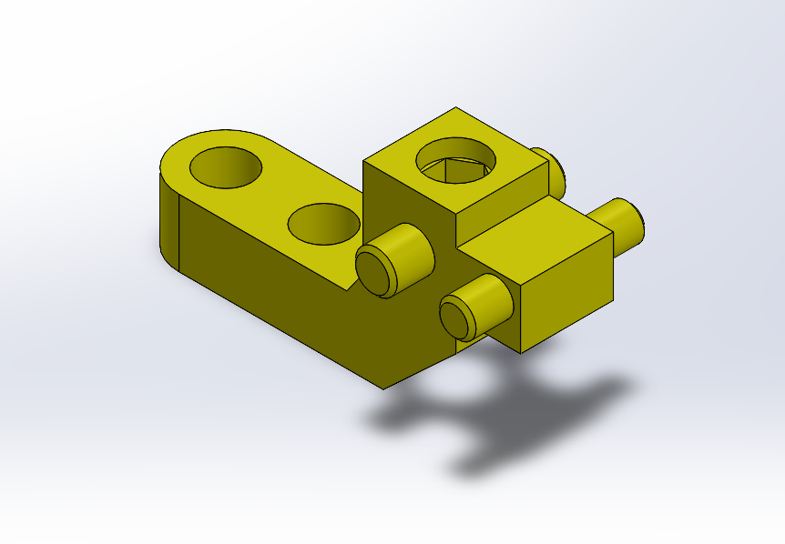
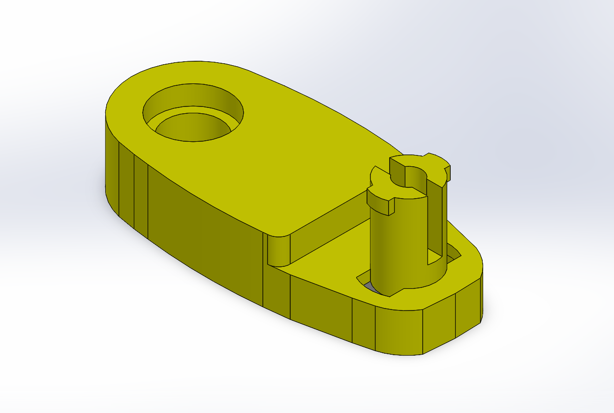
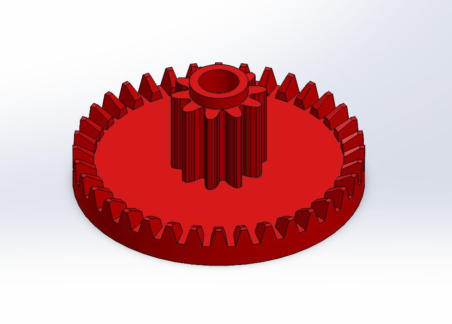
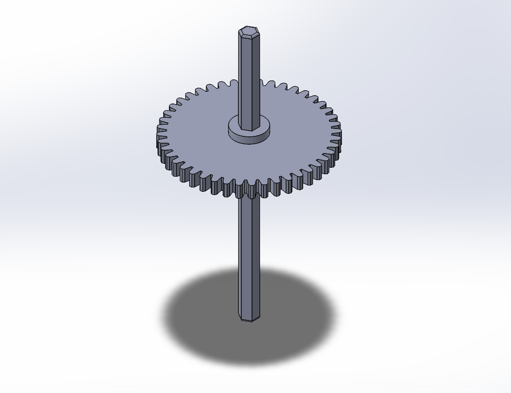
ENGG*2100 - Kinder Design Project
Mechanical Engineering
Solidworks, Team Communications, Problem Solving, Measurement Acquirement, Project Planning, Decal Design, Visual Design, Video Editing.
Worked within a multidisciplinary engineering team to design and develop a children's toy. Honed project management and design skills throughout the development process, resulting in proficiency with team based collaboration. Handled design of the decal and visual elements for the toy, aswell as marketing material including filming and editing of an advertisement.
Constant meeting and planning with the team was required to ensure the project was progressing smoothly and that all members were on the same page. The final product was a fully functional children's toy, complete with a visually appealing design and an engaging advertisement to promote it.
To develop Solidworks skills and gain experience in reverse engineering mechanical systems.
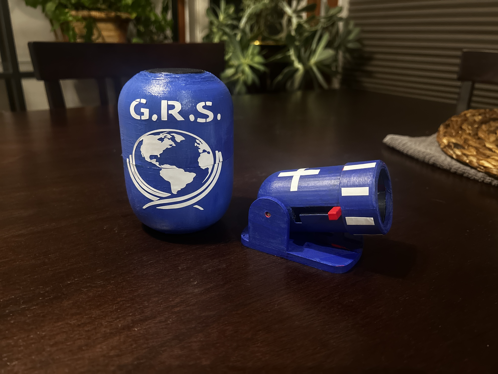
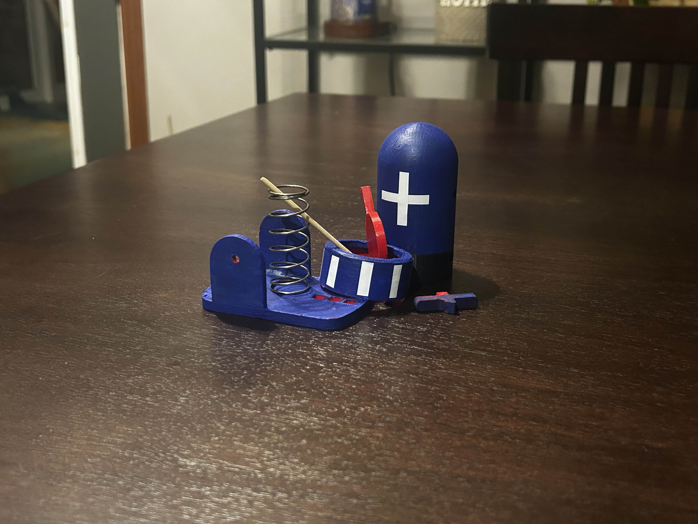
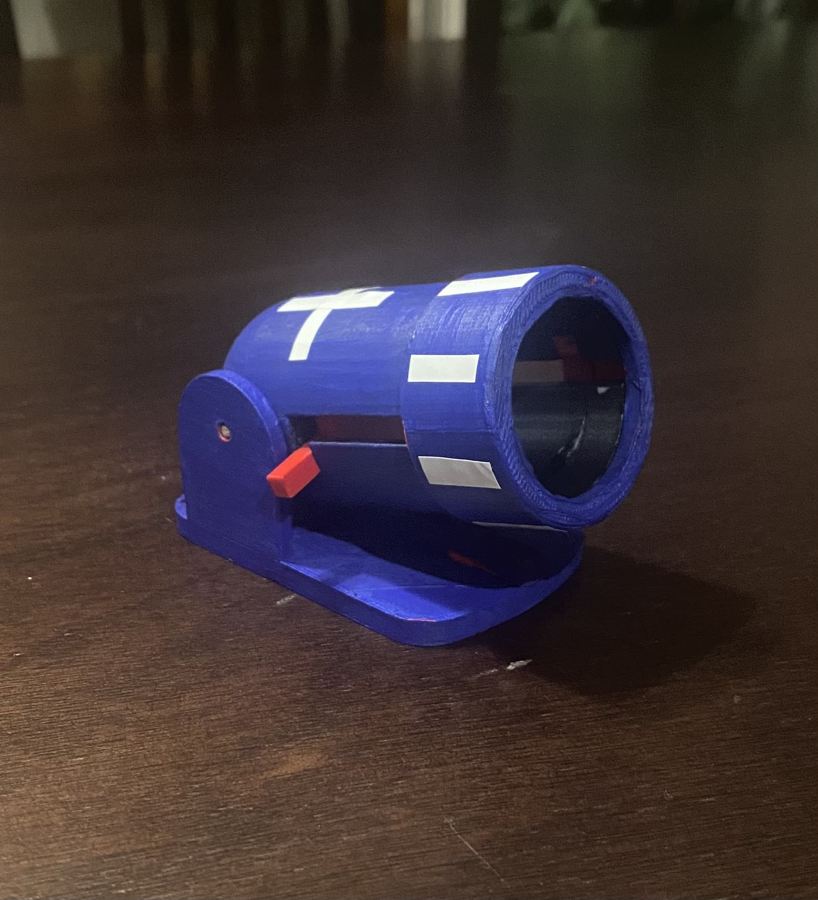